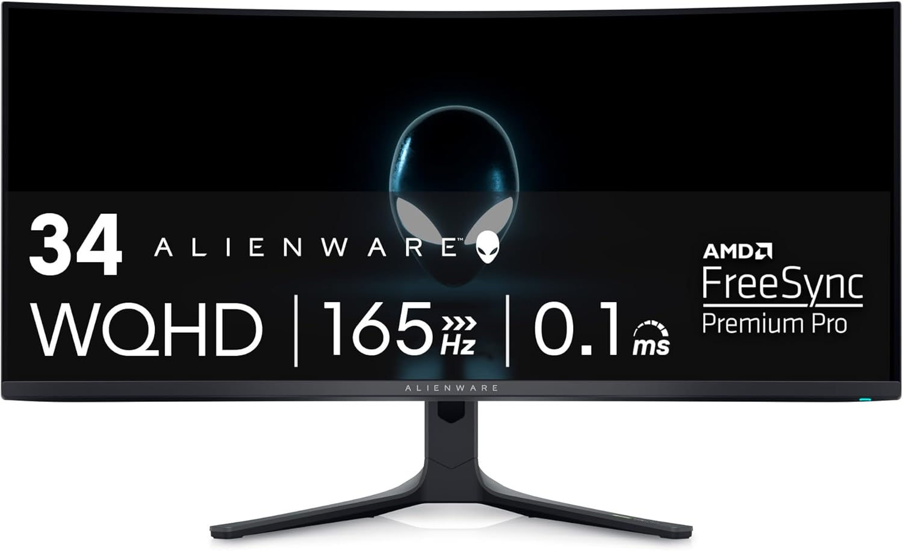
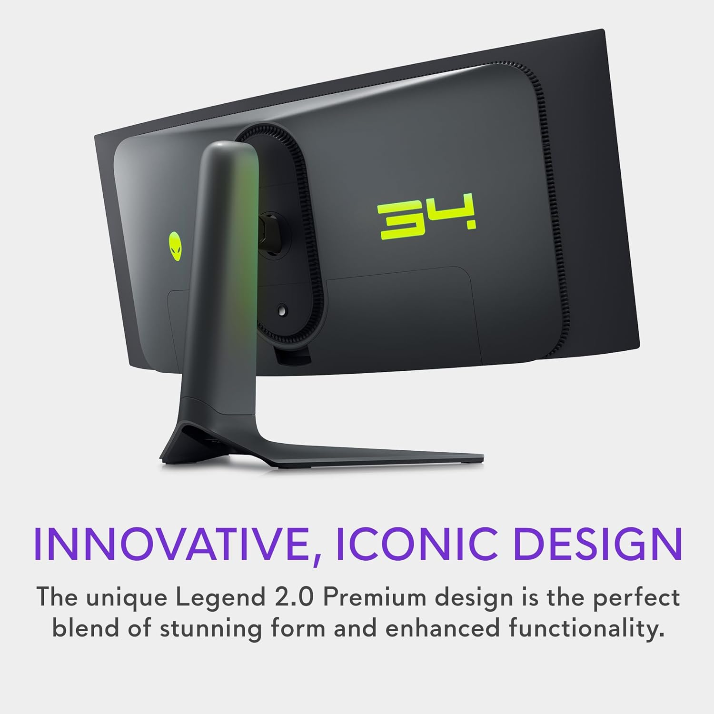

Alienware AW3423DWF Review (2026): QD-OLED Ultrawide Authority

The Dell Alienware AW3423DWF is not merely another ultrawide display; it is the definitive application of QD-OLED technology to the high-performance desktop market. By combining the infinite contrast of organic light-emitting diodes with the superior color volume of Quantum Dots, Dell has engineered a panel that challenges the boundaries between professional-grade color accuracy and immersive gaming. In this authoritative analysis, we deconstruct the mechanics of its 1800R curved panel, evaluate its HDR dynamics in high-stakes environments, and determine its viability for specialized remote workstations. For enthusiasts seeking a benchmark visual experience that bridges the gap between cinematic mastery and competitive speed, the AW3423DWF remains a defining reference point within the 21:9 ultrawide category. While more recent OLED ultrawides such as the Samsung Odyssey G8 and the MSI MEG342CQP offer different feature sets and aesthetic designs, the AW3423DWF still strikes the strongest balance of color volume, contrast, and value in 2026. This monitor is directly compared in our Alienware vs Odyssey G8 OLED comparison guide .
TL;DR Verdict
- Panel: QD-OLED (Samsung Display)
- Resolution: 3440×1440 (21:9)
- Refresh Rate: 165Hz with 0.1ms Response
- Best For: High-tier gaming + color-critical creative work
- Verdict: A reference-tier ultrawide for users who want elite OLED contrast and high refresh performance.
Compare with the Samsung Odyssey G8 →
Who Should Buy
- Enthusiasts seeking deep cinematic contrast
- Professional creators needing high color volume
- Competitive gamers valuing motion clarity and ultrawide field
Who Should Skip
- Bright room users prioritizing full-field luminance
- Users seeking 240 Hz ultrawide refresh
- Pure text editors favoring high-density 4K screens
- Users prioritizing smart ecosystem features ( Odyssey G8 )
1. Panel Technology: The QD-OLED Advantage
The Dell Alienware AW3423DWF utilizes a blue OLED layer passed through a quantum dot conversion layer. This architecture avoids the white subpixel reliance of traditional W-OLEDs, which can dilute color volume at peak luminance. By utilizing Quantum Dots, Dell ensures primary colors maintain high spectral purity at maximum brightness. Unlike IPS panels burdened by backlighting resulting in "IPS glow" the QD-OLED's self-lit pixels enable an infinite contrast ratio. When a pixel renders black, it ceases light emission entirely.
This ensures specular highlights and deep shadows coexist without blooming. For visual professionals, the 99.3% DCI-P3 gamut allows reproduction previously reserved for expensive mastering monitors. The integration of Quantum Dots increases efficiency and spectral purity, making this display an authoritative choice for both high-end cinematic consumption and technical color grading. The 1800R curve complements this by ensuring edge pixels remain at an optimal viewing angle, minimizing color shift.
2. Technical Specifications
| Panel Type | QD-OLED |
|---|---|
| Screen Size | 34″ |
| Resolution | 3440 × 1440 |
| Aspect Ratio | 21:9 Ultrawide |
| Refresh Rate | 165 Hz |
| Response Time | 0.1 ms (GtG) |
| VRR Support | G-Sync Compatible / FreeSync Premium Pro |
| HDR Certification | DisplayHDR True Black 400 |
| Peak Brightness (HDR) | ~1,000 nits (Small Window) |
| Ports | DP 1.4 ×2, HDMI 2.0, USB 3.2 Hub |
| Warranty | 3-Year Premium Panel (OLED Burn-in Covered) |
3. HDR Performance & Color Accuracy
Image quality is anchored by VESA DisplayHDR True Black 400, though the "Peak 1000" mode defines its performance. The panel delivers massive luminance peaks in small windows (2% to 10% coverage), rendering specular highlights with physical impact. Sustained full-screen brightness is managed by an Automatic Brightness Limiter (ABL) to prevent thermal degradation a safeguard users should anticipate in flat-white browser workflows. This limiter remains a technical boundary when transitioning from LED-backlit displays.
Color fidelity is clinical. Creator Mode offers DCI-P3 and sRGB presets with factory-calibrated Delta-E values below 2.0, providing a reliable reference for creative directors. Dark scene rendering transitions smoothly to true black with surgical precision, avoiding crushed shadows, making this display a strong choice for professional workflows mixing creative and leisure tasks.
In bright ambient lighting, the panel’s peak luminance and black maintenance may fall short of high-brightness LED or Mini-LED displays, making this model best suited for controlled lighting environments.

4. Gaming Dynamics & Motion Clarity
Operating at a native 165Hz, the AW3423DWF provides motion clarity surpassing higher-refresh IPS panels. The 0.1ms GtG response time is nearly instantaneous, eliminating the motion blur inherent to liquid crystals. Input latency measures under 4ms, ensuring direct tactical feedback. Support for AMD FreeSync Premium Pro and G-Sync compatibility eliminates tearing across the entire variable refresh rate (VRR) range.
The 21:9 aspect ratio offers a 30% wider field of view, providing a strategic advantage expanding peripheral vision transformative for simulators and grand strategy games. Bypassing the dedicated hardware G-Sync module found in earlier versions, this 'DWF' variant remains fanless and silent while enabling user-flashable firmware updates critical for HDR mapping refinements and OLED stability.
5. Productivity & Text Clarity Caveats
The 34-inch ultrawide resolution (3440×1440) is an ergonomic upgrade for multitasking, allowing side-by-side terminal and editor windows to coexist on a single plane without the bezel disruption of dual-monitor setups. For video production suites or productivity-focused environments, the horizontal real estate displays expansive timelines without the need for constant horizontal scrolling. However, an authoritative review must note the unique triangular sub-pixel layout of this Samsung-sourced panel. While standard operating systems are optimized for traditional RGB stripe patterns, sensitive users may observe subtle green or magenta fringing on the edges of small, high-contrast text. This is largely mitigated by modern firmware refinements and third-party software tools like "BetterClearType," making the impact minor for the vast majority of users. That said, those professional workflow is exclusively text-heavy—such as long-form coding or copy editing—may still find that a dedicated high-PPI 4K display offers superior absolute legibility.
6. Build, Connectivity & Cooling
Dell's "Legend 2.0" industrial design features a matte finish and a remarkably stable, weighted stand with premium damped movement. Connectivity includes two DisplayPort 1.4 ports and one HDMI 2.0 port. Users should prioritize DisplayPort to achieve the full 165Hz 10-bit experience, as the HDMI port is restricted to lower refresh rates. The inclusion of a four-port USB 3.2 Gen 1 hub aids peripheral management, while the passive cooling design ensures silent operation even during intense HDR sessions. The internal power supply eliminates external brick clutter, maintaining a minimalist workstation aesthetic.
7. OLED Care & Long-Term Reliability
Long-term authority on OLED hardware requires focusing on maintenance. Alienware includes automated "OLED Care" features: a 7-minute Pixel Refresh (triggering after 4 hours of use) and a deeper Panel Refresh cycle (every 1500 hours). These operate during standby to prevent image retention. Crucially, Dell includes a 3-year Premium Panel Exchange warranty that explicitly covers OLED burn-in, providing a necessary safety net for the investment. By practicing standard OLED hygiene such as hiding the taskbar and using rotating screensavers users can expect a reliable, high-performance lifespan from this panel.
8. Pros & Cons
The Good
- Infinite contrast with true absolute blacks
- Superior motion clarity via 0.1ms response time
- Incredible color volume with 99.3% DCI-P3 coverage
- Durable 3-year warranty specifically covering burn-in
- Silent, fanless design with premium build quality
The Bad
- Subpixel layout can cause minor text fringing in Windows
- HDMI port limited to 2.0 (DisplayPort required for full spec)
- ABL lowers full-field brightness on large white windows
- Lack of USB-C Power Delivery for single-cable laptop setups
9. Benchmark Verdict: Is It Worth It?
In 2026, the Alienware AW3423DWF remains the “sweet spot” of performance hardware. It avoids the GPU overhead of 4K while delivering a visual experience that no liquid-crystal panel can replicate. For those prioritizing color-critical imagery, cinematic depth, or competitive response times, the AW3423DWF is the primary recommendation. Users who prefer a design-forward approach with smart ecosystem features may also consider the Samsung Odyssey G8 as a complementary option in the premium OLED ultrawide category.
Secure the Ultimate Ultrawide Experience
Step into the QD-OLED era with Dell's 3-year burn-in guaranteed protection.
Check Availability on Amazon →Frequently Asked Questions
Is AW3423DWF true OLED?
Yes, it uses Quantum Dot OLED (QD-OLED) technology, which offers the pixel-perfect true black contrast of standard OLEDs combined with the higher color volume and brightness of Quantum Dot layers.
Is QD-OLED better than IPS?
For contrast, motion clarity, and HDR rendering, QD-OLED is significantly superior to IPS panels due to its self-lit pixels. However, IPS panels still hold an advantage in static text clarity and immunity to burn-in.
Is burn-in a concern?
Burn-in is an inherent risk with any OLED panel. The AW3423DWF mitigates this via a built-in pixel refresh mechanism, a panel refresh cycle, and Dell’s 3-year warranty specifically covering OLED burn-in.
Is it good for productivity?
Yes, the 21:9 ultrawide aspect ratio is highly efficient for side-by-side document views and long timeline editing. However, users sensitive to text fringing may prefer standard 4K IPS monitors for purely text-based workflows.
If you're still on the fence, see our AW3423DWF vs Odyssey G8 comparison for a deep-dive against its biggest rival.